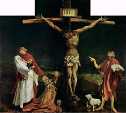

1. ‘Cross’, Photo by Szczepan 1990.

2. Anonymous, Mandylion of Edessa, tempura on linen, stretched over wood; (?3rd–5th Century); now held in the Papal chapel in the Vatican; photograph by M. Wolfgang.

3. Georges de la Tour, Le Nouveau-Né (The Newborn Child), oil on canvas (c.1645); Rennes Musée des Beaux-Arts.

4. A mathematical analysis of Piero’s Baptism, by Mike Higton.

5. Matthias Grünewald, Crucifixion (Eisenheim Altarpiece), oil on wood (1510); Colmar, Musée d’Unterlinden.

6. Matthias Grünewald, Resurrection (Eisenheim Altarpiece), oil on wood (1510); Colmar, Musée d’Unterlinden.

7. Diego Rivera, Jacques Lipchitz (Portrait of a Young Man), oil on canvas (1914); Museum of Modern Art, New York.